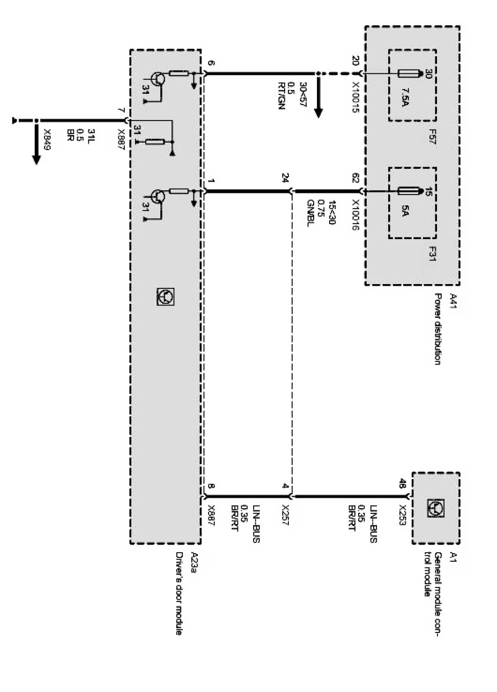

Operation CHARM
: Car repair manuals for everyone.
Home
>>
BMW
>>
2007
>>
X3 3.0si (E83) L6-3.0L (N52K)
>>
Repair and Diagnosis
>>
Diagrams
>>
Electrical Diagrams
>>
Body
>>
Seat and Mirror Functions
>>
Passenger's Side Mirror
>>
Driver's Door Module (X Series_X3-E83)
>>
Supply, Driver's Door Module (Without Seat Memory or Mirror Fold-In Function As of 03/04)
Supply, Driver's Door Module (Without Seat Memory or Mirror Fold-In Function As of 03/04)
Supply, driver's door module:
